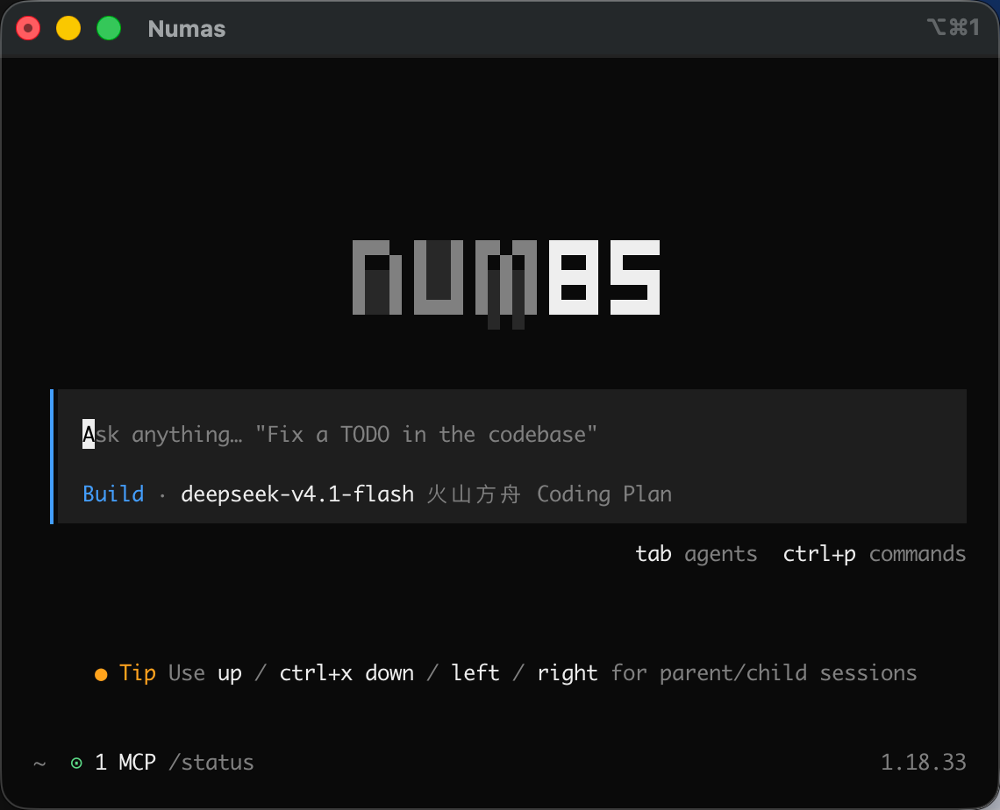
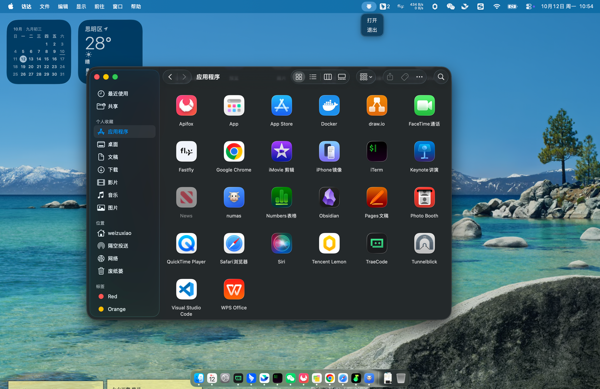
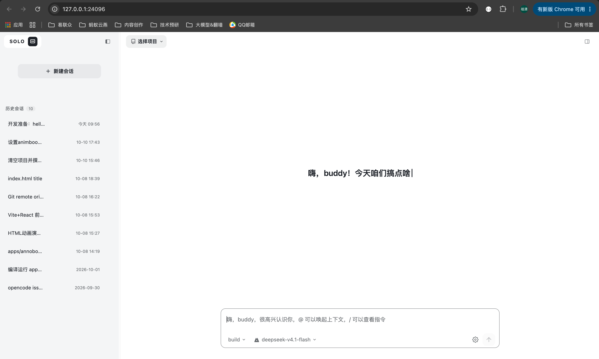
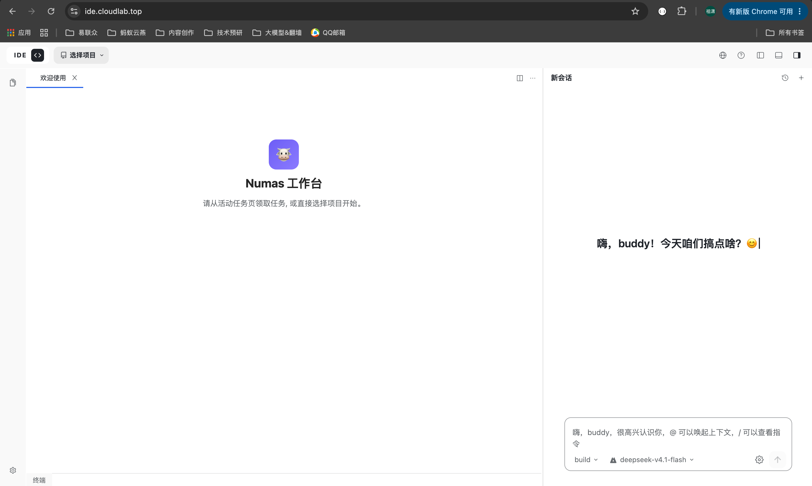

Numas 是一个本地运行的 AI 工作台（编码 / 办公任务），由三部分组成：
默认本地运行，数据与文件不出本机；也支持前后端分离部署（页面在云端，直连访问者本机的 numas）。




~/.opencode/<项目路径>/.opencode/.opencode/
├── agents/ # 自定义 Agent（*.md，含 frontmatter）；也支持单数 agent/
├── commands/ # 自定义斜杠命令（*.md）；也支持单数 command/
├── modes/ # 自定义模式（*.md）；也支持单数 mode/
├── plugins/ # 插件（*.ts / *.js）；也支持单数 plugin/
├── skills/ # 技能（<技能名>/SKILL.md）
├── tools/ # 自定义工具（*.ts / *.js）；也支持单数 tool/
├── themes/ # 自定义主题（*.json）
└── opencode.json / opencode.jsonc # 项目级配置官方约定：
.opencode/与~/.config/opencode/下的子目录优先用复数名
（agents/commands/modes/plugins/skills/tools/themes/），
单数名（agent/command/…）仅为向后兼容保留。
配置读取优先级（后者覆盖前者）：远程 → 全局 → 项目opencode.json→.opencode/目录 →OPENCODE_CONFIG_CONTENT→ 托管配置 → macOS MDM。
基于 AI SDK + Models.dev 模型目录，开箱内置集成 70+ 服务商
（目录收录 200+），并支持运行本地模型。
添加与使用：
/connect 添加服务商凭据（API Key 或 OAuth 登录），凭据存于 ~/.local/share/opencode/auth.json；provider / model 指定模型，另可用 small_model 指定轻量任务专用模型。其他能力：
enabled_providers / disabled_providers 白名单与黑名单，experimental.policies 可限制可用的 provider。Agent 的每一次执行都可通过 permission 配置控制，规则解析为三种动作：
"allow" — 直接执行，无需审批"ask" — 弹窗提示，由用户批准"deny" — 直接阻止可管控的工具 / 防护项：
bash — 运行 shell 命令（按解析后的命令匹配，如 git status --porcelain）edit — 所有文件修改（涵盖 edit / write / patch）read / glob / grep — 读取、通配、内容搜索task / skill / lsp / webfetch / websearch — 子代理、技能、LSP、抓取、搜索external_directory — 访问工作目录之外的路径doom_loop — 同一工具以相同输入重复 3 次时触发（防死循环）细粒度规则（对象语法）：按输入做模式匹配，最后匹配的规则优先。
{
"permission": {
"bash": {
"*": "ask",
"git *": "allow",
"rm *": "deny"
},
"edit": {
"*": "deny",
"packages/web/src/content/docs/*.mdx": "allow"
}
}
}默认行为（宽松 + 安全兜底）：未配置时多数权限默认 allow；read 默认允许但 .env 系列默认 deny（.env.example 除外）；doom_loop 与 external_directory 默认 ask。
审批与代理：ask 触发时界面提供 once（仅本次）/ always（本会话内匹配模式后续放行）/reject（拒绝）三种选择；权限可按 agent 单独覆盖，规则与全局合并后 agent 优先。
plan 为只读（默认拒绝改文件、执行 bash 前询问），build 为完整权限；bash 在项目环境中执行 shell 命令，支持配置默认 shell（shell 选项），Agent 通过一组内置工具操作代码库与环境（默认全部启用，行为受 §2.3 权限控制）：
| 工具 | 作用 |
|---|---|
read | 读取文件内容（支持图片 / PDF 附件） |
write | 新建或覆盖文件 |
edit | 精确字符串替换式修改文件 |
patch | 应用 diff / 补丁 |
bash | 在项目环境中执行 shell 命令 |
glob | 按模式查找文件 |
grep | 正则搜索文件内容 |
task | 启动子 Agent 处理独立子任务 |
webfetch | 抓取指定 URL 内容 |
websearch | 联网搜索 |
skill | 按需加载代理技能（SKILL.md） |
todowrite | 维护任务清单 / 进度 |
question | 在执行中向用户提问、请求拍板 |
lsp | LSP 查询（实验性） |
可扩展的工具来源（怎么用 / 怎么扩见 §3）：
.opencode/tools/*.ts，导出 tool({...}) 即成为 agent 可调用工具；SKILL.md 封装可复用指令，按需通过 skill 工具加载。接入任意 OpenAI 兼容端点（本地推理 / 自建网关 / 代理）：
{
"$schema": "https://opencode.ai/config.json",
"provider": {
"my-gateway": {
"npm": "@ai-sdk/openai-compatible",
"name": "My Gateway",
"options": {
"baseURL": "http://127.0.0.1:1337/v1",
"apiKey": "{env:MY_API_KEY}"
},
"models": {
"my-model-id": { "name": "My Model" }
}
}
}
}npm 指定 SDK 适配包（OpenAI 兼容用 @ai-sdk/openai-compatible）；options.baseURL 指向端点，models 列出可用模型（id 需与 GET /v1/models 一致）；{env:VAR} / {file:path} 变量引用，不写死。覆盖已内置服务商：直接在 provider.<id>.options 里改 baseURL / apiKey / 超时等
（timeout / headerTimeout / chunkTimeout）。
模型选择与限制：model 设默认主模型、small_model 设轻量任务模型；enabled_providers / disabled_providers 做白 / 黑名单。
技能 = 一段可复用指令，放在 <技能名>/SKILL.md：
.opencode/skills/<name>/SKILL.md；全局级 ~/.config/opencode/skills/<name>/SKILL.md；.claude/skills/）与 Agents（.agents/skills/）目录。SKILL.md。name 必须一致，仅小写字母 / 数字 / 单连字符。---
name: code-review
description: 按团队规范审查改动，聚焦安全、性能与可维护性
---
## What I do
- 逐文件审查变更，标注风险点
## When to use me
- 用户要求审查代码 / PR 时技能通过 skill 工具按需加载：agent 先看到名称与描述，需要时再拉取全文；
可用权限 (skill) 控制哪些技能允许被加载。
MCP（Model Context Protocol）为 agent 扩展工具 / 资源 / prompt。在配置的 mcp 段声明：
本地（stdio）：
{
"mcp": {
"my-local-mcp": {
"type": "local",
"command": ["npx", "-y", "my-mcp-command"],
"enabled": true,
"environment": { "MY_ENV_VAR": "value" }
}
}
}远程（HTTP）：
{
"mcp": {
"my-remote-mcp": {
"type": "remote",
"url": "https://my-mcp-server.com",
"headers": { "Authorization": "Bearer MY_API_KEY" }
}
}
}command + environment；远程用 url + headers（支持 OAuth 自动认证）；enabled（开关）与 timeout（拉取工具超时，默认 5s）；mcp:* 参与权限控制（见 §2.3），提示里可直接点名使用。三类扩展开发方式：
1. 自定义工具（.opencode/tools/*.ts 或 ~/.config/opencode/tools/）：
import { tool } from "@opencode-ai/plugin"
export default tool({
description: "Query the project database",
args: { query: tool.schema.string().describe("SQL query to execute") },
async execute(args, context) {
// context: { agent, sessionID, messageID, directory, worktree }
return `Executed: ${args.query}`
},
})<文件名>_<导出名>（如 math_add）；tool.schema（Zod）定义；同名会覆盖内置工具（谨慎）；execute 内部可调用任何语言的脚本。2. 插件（.opencode/plugins/*.ts|js）：
import type { Plugin } from "@opencode-ai/plugin"
export const MyPlugin: Plugin = async ({ project, client, $, directory, worktree }) => {
return {
// 钩子实现
}
}client（OpenCode SDK）、$（Bun Shell）、directory / worktree；tool.execute.before/after、file.edited、session.*、permission.*、tui.* 等；也可注入环境变量、注册自定义工具、做通知 / 日志 / 压缩钩子；3. 自定义 Agent（.opencode/agents/*.md 或 JSON agent 段）：指定 model / prompt /
可用工具与权限，扩展出专用角色的主 / 子代理。